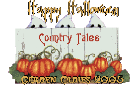
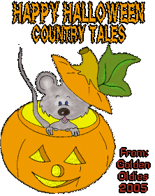
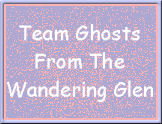
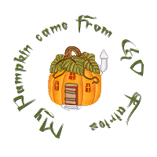
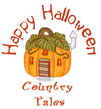
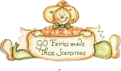
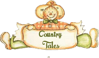
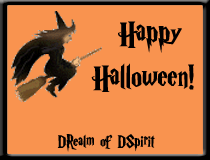
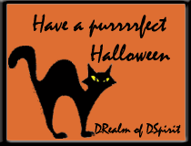
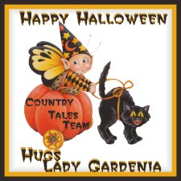

|
So how much fun is Halloween!?
Well around The Site Fights...
it's like Halloween throughout the whole month of October.
There's tons of "treats" to gather...or to share.
Below are some I treated myself to along the way!
I found ALL the spooky critters in the Country Tales "Hide-n-Seek" game! :)



|


|


Below are some awesome Halloween tags from DRealm of DSpirit!


Some fun stuff ES Padfoot likes to collect for us at Country Tales!
Adopt a Growing Sparkle
Adopt your own growing Sparkle
at D'Sitefights Theatre.
|

Send a Blooming Basket!
Thanks MOM!!

|